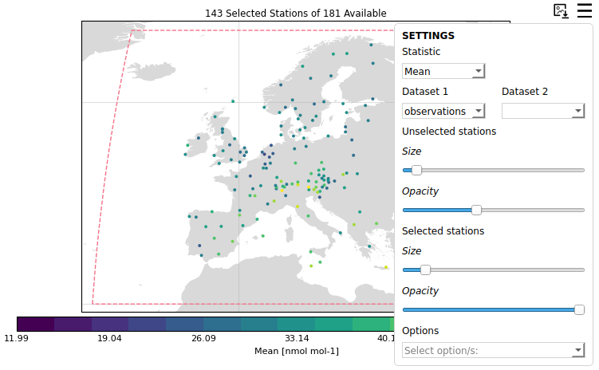
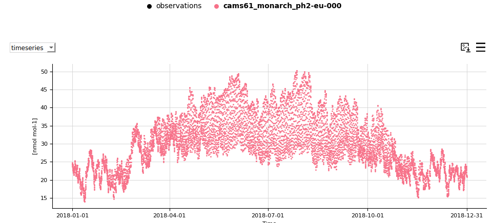
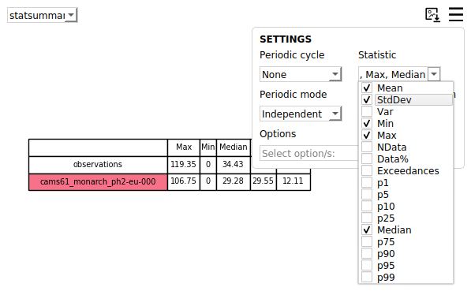
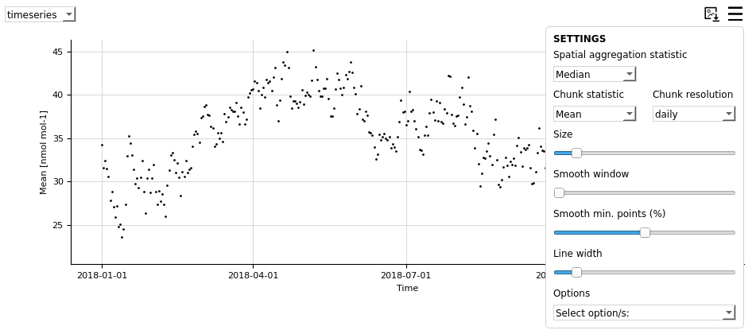
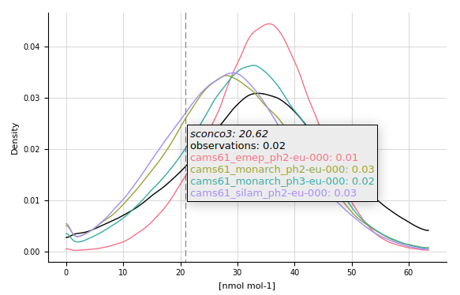
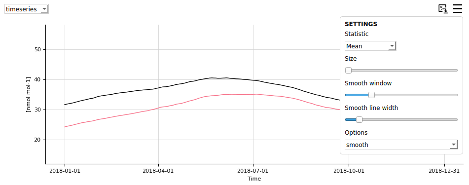

Plot customisation
Editing the plots style
General edits
If you want to edit the style of your plots, you will need to edit the file settings/plot_characteristics.yaml. There you will find parameters per plot type, and within those, parameters for each of the available modes, as well as general ones that are applied to all modes.
Map resolution
It is possible to customise the resolution the map is drawn at by changing the map_resolution variable under the map section in the plot characteristics file.
There are 3 options as present:
low: 110m in resolutionmedium: 50m in resolution (default)high: 10m in resolution
Map projection
The projection the map is drawn in can be set by changing the projection variable under the map section. Any of the following can be used:
Aitoff, AzimuthalEquidistant, EckertI, EckertII, EckertIII, EckertIV, EckertV, EckertVI, EqualEarth, Hammer, InterruptedGoodeHomolosine, LambertAzimuthalEqualArea, LambertCylindrical, Mercator, Miller, Mollweide, NorthPolarStereo, Orthographic, PlateCarree, Robinson (default), Sinusoidal, SouthPolarStereo, Stereographic
Map colour presets
A colour preset sets the land and ocean colours together with the colourmaps used for the map points. It can be set by changing the colour_preset variable under the map section, and applies to every mode.
The available presets are defined in settings/colourmaps.yaml:
Light: a near-white basemap, giving the colourmap the most room (default)Dark: dark grey land and seaNight: near-black land and seaClassic: more classical land and sea coloursTerrain: sandy land and a blue seaColourblind: colours chosen to stay distinguishable under the common forms of colour blindness
In the dashboard the preset can also be changed from the map settings menu.
Map land and ocean colours
The land and ocean colours come from the preset, but can be set individually by changing the facecolor of the land_polygon and ocean_polygon variables under the map section. Left empty, the preset’s colours are used. Any matplotlib colour can be given, e.g. "#E8E8E8" or "lightgrey".
The ocean can be hidden entirely by setting visible to false under ocean_polygon.
Colourbar colourmaps and bounds
Two things decide how the map points are coloured: the colourmap they are drawn with, and the bounds the colourbar spans. They are set separately, and neither has to be set for a plot to be made.
Colourmaps
Statistics measure different things, so they are not all drawn with the same colourmap. Which one a statistic needs is set with cmap_type_bias in basic_stats.yaml and model_bias_stats.yaml:
diverging: the statistic is signed and the ideal value sits in the middle, e.g.MB,rsequential_low_best: the statistic is an error, never negative, and 0 is perfect, e.g.RMSEsequential_high_best: the statistic is a skill score and its maximum is perfect, e.g.r2
The absolute view of a statistic is always drawn sequentially, so cmap_type_bias only describes the bias view.
The colourmap each of these types gets comes from the active colour preset in settings/colourmaps.yaml, each of which sets one per type, chosen to stay legible against that preset’s land and ocean colours (see Map colour presets). Between them these cover every statistic, without anything having to be set per statistic, and changing the preset changes all of them together.
To use a particular colourmap for one statistic instead of the one its type would give it, set cmap_absolute or cmap_bias for that statistic in the basic_stats.yaml and model_bias_stats.yaml files. They can be given as a string, which applies to every species, or as a dictionary per species, which then needs to cover each of the species loaded or an error will appear. Left empty, the statistic’s type decides.
Colourmaps are therefore resolved in this order:
the colourmap chosen in the dashboard’s map settings menu, which applies until the statistic is changed
cmap_absolute/cmap_biasfor the statistic inbasic_stats.yamlandmodel_bias_stats.yaml, if setthe colourmap for the statistic’s type, from the colour preset in use
Bounds
The bounds of the colourbar are statistic specific, and are set alongside the colourmaps, in the entry for the statistic in basic_stats.yaml and model_bias_stats.yaml. Each statistic has four: vmin_absolute and vmax_absolute for its absolute view, and vmin_bias and vmax_bias for its bias view. Each is given as a dictionary with the keys being the names of the species, so the bounds can differ per species as well as per statistic. They can be defined for some species only, and the rest will take the data minimum and maximum values.
An example of an entry setting both bounds and colourmaps can be seen in the code below:
"Mean": {"function": "calculate_mean",
"order": 0,
"label": "Mean",
"arguments": {},
"units": "[measurement_units]",
"minimum_bias": [0.0],
"vmin_absolute": {"sconco3": 0, "sconcno2": 0},
"vmax_absolute": {"sconco3": 20, "sconcno2": 5},
"vmin_bias": {},
"vmax_bias": {},
"cmap_absolute": "viridis",
"cmap_bias": "RdYlBu_r"},
In the dashboard both the colourmap and the bounds can also be changed from the map settings menu, and returned to the values above with the reset control beside the colourbar settings.
Number of colourbar labels and sections
The number of labels shown on the colourbar can be set with n_ticks under the cb section. Colourbars are drawn in discrete sections by default; this can be changed with discrete, and the number of sections with n_discrete. All three can also be changed from the dashboard’s map settings menu.
Heatmap colours
Heatmaps are coloured by statistic type in the same way as the map, and have a colour_preset variable of their own under the heatmap section, naming any of the presets above. Only the colourmaps of that preset are used, as a heatmap has no basemap for the land and ocean colours to apply to, so a heatmap and a map can be given different presets without the two looking unrelated.
To use one colourmap for every statistic instead, set cmap under the plot variable of the heatmap section.
Country borders and gridlines
Country borders and gridlines can be turned on and off by setting visible under the borders and gridlines variables of the map section. Borders are off by default, gridlines are on.
Their style can be edited with the same variables, e.g. linewidth for the borders and linestyle and alpha for the gridlines. Left empty, the edgecolor of the borders and the color of the gridlines are chosen to stay visible against the land and ocean colours in use, so a dark basemap gets light borders and a light basemap dark ones. Setting either uses that colour instead, whatever the basemap.
Map background
Users can define the type of background that is plotted on the map. This can be set by changing the background variable under the map section.
There are 3 available standard options:
providentia: The standard white and grey combination that has been historically available (default)blue_marble: NASA’s blue marble productshaded_relief: Imagery showing changes in elevation
Users can easily add any type of background by putting an image file in the providentia/dependencies/resources folder, with the filename named in the same way as in the plot characteristics file, e.g. blue_marble.png and "background": "blue_marble".
Map point sizing
The size of the map points is worked out from how densely the stations being shown are packed into the plot, so they stay legible whether a map is showing a handful of stations or several thousand. This applies to every mode, and in the dashboard it is recalculated as the map is zoomed.
In the dashboard the opacity of the points is set alongside the size, and selected stations are drawn larger and more solid than unselected ones. This can be turned off by setting marker_automatic to false under the dashboard section of map, in which case the size and opacity come from the marker_selected and marker_unselected variables and can be changed with the sliders in the map settings menu.
Removing extreme stations by their statistical values
If you want to automatically remove stations that have certain statistical values, you will need to add your criteria in the file settings/remove_extreme_stations.yaml. An example of this exists for CAMS:
"CAMS": {"r": ["<0.3"],
"NMB": ["<-100.0", ">100.0"],
"NRMSE": [">100.0"]}
The statistics can be general, across all components or they can be specific per component, for example:
"CAMS": {"r": {"sconco3": ["<0.3"],
"sconcno2":[<0.55]},
"NMB": {"sconco3": ["<-100.0", ">100.0"],
"sconcno2": ["<-20.0", ">20.0"]},
"NRMSE": {"sconco3": [">100.0"],
"sconcno2":[">200.0"]}}
Any absolute statistic can be set to be a bias statistic by adding _bias e.g.:
"p95_bias": ["<10",">20"]
You will also need to add the variable remove_extreme_stations in your configuration file, referencing the group of statistics to filter by that you defined, e.g. CAMS:
remove_extreme_stations=CAMS
Calculating exceedances
In Providentia the exceedances statistic is available in the list of available statistics. How it is currently implemented is simplistic, but users can simply state a threshold/limit value per component or network-component pair, and each instance where values exceed this limit will be counted. Therefore the exceedances statistic simply gives the number of instances above the threshold. The threshold values can be set in the file settings/exceedances.yaml per component or network-component pair, as so:
sconco3: {
"units": "nmol mol-1",
"value": 30.07
},
EBAS|sconcno2: {
"units": "nmol mol-1",
"value": 5.23
}
In the case a threshold is set for a specific component, and per network-component, then the threshold for network-component is taken preferentially.
Dashboard interactive features
Changing the plot style
The style of the plots can be edited by clicking on the burger menus and changing the settings.

Legend picking
Clicking on the legend labels will remove or add data to each of the plots. If the label appears in bold, the data will be visible. If not, it will be hidden.

Changing the statistics
The statistics in the statsummary can be updated from the burger menu.

This can also be applied in the timeseries plot by selecting the chunk statistic and temporal resolution.

Information on hover
Most plots show information when hovering over them. Take a look for instance at the distribution plot:

Smoothing
It is possible to add a smoothing line to the timeseries plot and make the points disappear. In order to achieve this, you will need to increase the smooth window, which by default is 0 and bring the marker size down to 0. You can also use the plot option hidedata to hide the points.
